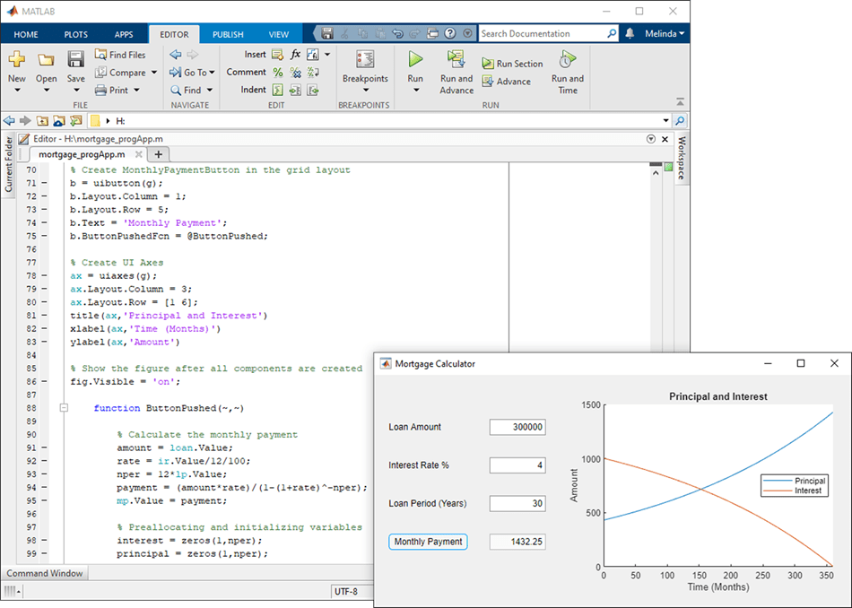

Ways to Build Apps
You can use MATLAB® to build interactive user interfaces that can be integrated into various environments. You can build two types of user interfaces:
Apps — Self-contained interfaces that perform operations based on user interactions
Live Editor tasks — Interfaces that can be embedded into a live script and that generate code as users explore parameters
The way that you build and share these interfaces, as well as the main file type for the interface, differs depending on the interface type. This table shows the differences.
| Type | Ways to Build | File Type | Sharing Options |
|---|---|---|---|
| App | Interactively, using App Designer | .mlapp |
|
| Programmatically, using MATLAB functions | .m (MATLAB script, function, or class file) |
| |
| Live Editor task | Programmatically, using the matlab.task.LiveTask base class or by converting a
selection in the Live Editor that contains code and interactive
controls | .m (MATLAB class file) |
|
Build an App
To create a self-contained user interface, build an app. You can build an app in multiple ways:
Interactively, using App Designer
Programmatically, using MATLAB functions
Each of these approaches offers a different workflow and a slightly different set of functionalities. The best choice for you depends on your project requirements and how you prefer to work.
Use App Designer to Build Apps Interactively
App Designer is a rich interactive environment introduced in R2016a, and it is the recommended environment for building apps in MATLAB. It includes a fully integrated version of the MATLAB Editor. The layout design and code views are tightly linked so that changes you make in one view immediately affect the other. A larger set of interactive components is available, including date picker, tree, and image components. There are also features like a grid layout manager and automatic reflow options to make your app detect and adapt to changes in screen size. For more information, see Develop Apps Using App Designer.

Use MATLAB Functions to Build Apps Programmatically
You can also code the layout and behavior of your app entirely using
MATLAB functions. In this approach, you create a figure to serve as the
container for your UI by using either the uifigure or
figure function. Then, you add components to it
programmatically. Each type of figure supports different components and
properties. The uifigure function is the recommended
function for building new apps because it creates a figure that is specifically
configured for app building. UI figures support the same types of modern
graphics and interactive UI components that App Designer supports. For more
information, see Develop Apps Programmatically.

Build a Live Editor Task
To create an interface that can be embedded into a live script, build a Live Editor task. Live Editor tasks represent a series of MATLAB commands that are automatically generated as users explore parameters. Tasks are useful because they can help reduce development time, errors, and time spent plotting.
You can create a Live Editor task programmatically by defining a subclass of the
matlab.task.LiveTask base class. Then, you programmatically add
components to the task to configure the user interface, and you write code to
generate the MATLAB commands and output for the task. For more information, see Develop Live Editor Tasks.
Alternatively, you can create a Live Editor task by selecting and converting code in the Live Editor that includes interactive controls. Supported controls include numeric sliders, numeric spinners, drop-down lists, check boxes, edit fields, buttons, and file browsers. For more information see Create Live Editor Task from Selection. (since R2023b)